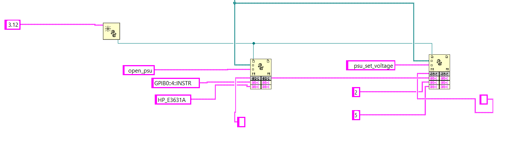
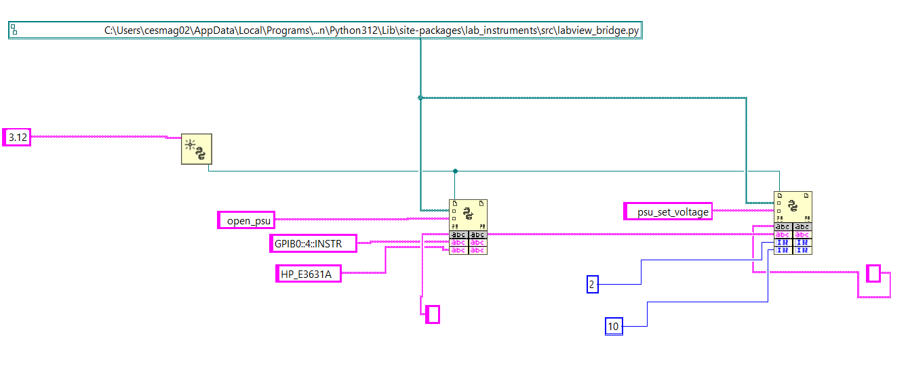
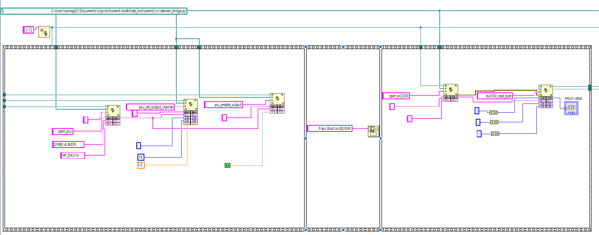
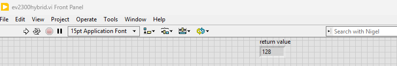

LabVIEW Bridge¶
Call the toolkit's Python instrument drivers from LabVIEW using the built-in Python Node (LabVIEW 2018+).
Prerequisites¶
| Requirement | Notes |
|---|---|
| LabVIEW 2018+ | Python Node was introduced in LabVIEW 2018 |
| Python 3.10+ | Must match LabVIEW bitness (64-bit LabVIEW needs 64-bit Python) |
| scpi-instrument-toolkit | pip install git+https://github.com/T-O-M-Tool-Oauto-Mationator/scpi-instrument-toolkit.git |
| NI-VISA | For USB/GPIB/LAN instruments |
Python must be on your PATH
When installing Python, check the box "Add Python to PATH". LabVIEW uses the system PATH to find the Python interpreter. If Python is not on PATH, the Python Node will fail silently.
Bitness must match
64-bit LabVIEW requires 64-bit Python. 32-bit LabVIEW requires 32-bit Python. A mismatch will cause the Python Node to fail with no useful error message.
Step 1: Find the Bridge Module Path¶
There are two ways to get the path, depending on how you installed the toolkit.
Option A: pip install (installed from PyPI or git)¶
Open a terminal and run:
Copy the full path. Example:
C:\Users\you\AppData\Local\Programs\Python\Python312\Lib\site-packages\lab_instruments\src\labview_bridge.py
Option B: git clone (repo on disk)¶
Use the top-level shim at the repository root instead:
This file re-exports every function from the real bridge and is the recommended target for git-clone setups.
Either path works
Both files expose identical function names. The only difference is the path you paste into the Python Node's module path terminal.
Step 2: Understand the Python Node Pattern¶
LabVIEW's Python integration uses a "railroad track" pattern with three palette items found under Connectivity > Python in the Functions palette:
flowchart LR
A([Open Python<br/>Session]) -->|session refnum| B[Python Node<br/>open_psu]
B -->|session refnum| C[Python Node<br/>set_voltage]
C -->|session refnum| D([Close Python<br/>Session])The session refnum wire passes through every Python Node like a railroad track — that's how they all share the bridge's instrument cache.
The Three Palette Items¶
-
Open Python Session — Creates a Python interpreter session
- Input: Python version number — use your installed Python's major.minor (e.g.
3.12for Python 3.12.x). Older LabVIEW versions accept the bare3; LabVIEW 2024+ generally requires the explicit minor. Check what's installed withpython --versionand feed that to the constant. - Output: A session refnum (reference wire) — thread this through all your Python Nodes
- Input: Python version number — use your installed Python's major.minor (e.g.
-
Python Node — Calls one Python function
- Has built-in terminals for: session refnum, module path (Path type), and function name (String)
- Resize the node (drag the bottom edge down) to add input terminals for the function's parameters
- Parameters are positional — the order you wire them must match the Python function signature
- Has one output terminal on the right — right-click it to set the expected return type
- Has error in/out terminals along the bottom
-
Close Python Session — Shuts down the Python interpreter
- Always close the session when your VI is done
Session persistence is critical
The bridge stores instrument connections in a Python module-level cache. All Python Nodes that share the same session refnum share the same cache. This means open_psu() in one node and psu_set_voltage() in the next node can find each other's data — as long as they share the same session wire.
Step 3: Tutorial — Set PSU to 5V and Read DMM¶
This tutorial uses instruments from the ESET-453 lab bench:
- HP E3631A PSU — typically on
GPIB0::1::INSTRbut the actual address varies by bench - HP 34401A DMM — typically on
GPIB0::22::INSTR
Discover your bench's actual GPIB addresses before wiring constants
GPIB primary addresses are set per-instrument on each bench and may not match the values above. Before you build the VI, find the real addresses with the toolkit's discovery helper:
python -c "from lab_instruments.src import labview_bridge; print(labview_bridge.list_visa_resources())"
You should see something like:
Then pair each address with its instrument by querying the IDN string (NI MAX > Devices and Interfaces > GPIB0 > Scan for Instruments works too). Use those addresses in the String Constants in the steps below — if you hardcode GPIB0::1::INSTR and your PSU is actually at address 4, open_psu will throw VI_ERROR_NLISTENERS on the first SCPI write.
3.1 Create a New VI¶
Open LabVIEW and create a new blank VI (File > New VI). Switch to the Block Diagram window (Ctrl+E).
3.2 Place Open Python Session¶
- Right-click the block diagram to open the Functions palette
- Navigate to Connectivity > Python
- Place Open Python Session on the left side of your diagram
- Right-click the version input terminal and select Create > Constant
- Set the constant value to your installed Python's major.minor version (e.g.
3.12for Python 3.12.x).- Run
python --versionin a terminal to confirm what's installed. - LabVIEW 2024+ generally requires the explicit minor (
3.12,3.11). Older LabVIEW versions accept the bare3. If3.12errors out on your install, fall back to3.
- Run
3.3 Place the First Python Node — Open the PSU¶
- From the same Connectivity > Python palette, place a Python Node to the right of Open Python Session
- Wire the session refnum output from Open Python Session into the Python Node's session input (top-left terminal)
- Wire the module path terminal:
- Right-click it and select Create > Constant
- This creates a Path constant — paste your module path from Step 1
- Wire the function name terminal:
- Right-click it and select Create > Constant
- Type:
open_psu
-
Add function parameters — drag the bottom edge of the Python Node down to expose 2 additional input terminals
Parameter terminals: drop constants from the palette
Right-click > Create > Constant works on the built-in module path and function name terminals, but is unreliable on the expanded parameter terminals you expose by dragging the node down. Those terminals are Variant until a wire is attached, so the menu often refuses to create a constant of the correct type.
Workaround used in the steps below: place a constant of the correct type from the Functions palette (Programming > String > String Constant, Programming > Numeric > Numeric Constant, or Programming > Boolean > True/False Constant), type the value into it, then wire it into the parameter terminal.
Parameter order is top-to-bottom — the wire's destination terminal is what counts
LabVIEW maps the expanded parameter slots onto your Python function's positional arguments top-to-bottom. For
open_psu(visa_address, driver_name):- Topmost expanded slot →
visa_address(1st positional arg) - Next slot down →
driver_name(2nd positional arg)
What matters is which terminal on the Python Node the wire lands on, not where you placed the String Constant on the diagram. If you swap them,
open_psuwill throwVI_ERROR_RSRC_NFOUND(PyVISA tries to open"HP_E3631A"as a resource and fails to parse it) orValueError: Unknown driver(depending on which way they're swapped).Also: no leading or trailing whitespace in your String Constants.
" GPIB0::4::INSTR"(with a leading space) is not the same string as"GPIB0::4::INSTR"and will fail validation with a confusing error. - Topmost expanded slot →
-
Wire the first parameter (the topmost expanded slot — this becomes
visa_address):- From the Functions palette, place a String Constant (Programming > String) on the diagram
- Type your PSU's actual address (e.g.
GPIB0::1::INSTRorGPIB0::4::INSTR— see the warning at the top of Step 3) - Wire it into the top expanded parameter terminal on the Python Node
- Wire the second parameter (the next slot down — this becomes
driver_name):- Place another String Constant from Programming > String
- Type:
HP_E3631A - Wire it into the second-from-top expanded parameter terminal
-
Set the output type — right-click the output terminal on the right side, select the return type as String
- At runtime, this output wire will carry the instrument ID string (e.g.
"psu_1"). The output itself isn't stored anywhere — the value only exists on the wire while the VI runs. - What to do with the output: you have two choices, and you'll typically do both:
- Wire it forward into the next Python Node's
instrument_idinput. That's howpsu_set_voltagein Step 3.4 receives the ID. The wire is the variable — no String Constant in between. - Optional debug indicator: right-click the output terminal and select Create > Indicator to put a String Indicator on the front panel that displays the ID after each run. Useful while learning. You can delete it once the chain is working.
- Wire it forward into the next Python Node's
A String Constant cannot receive an output
If you placed an empty String Constant near the output terminal expecting it to "fill in" with
"psu_1", delete it — String Constants only feed values into nodes, they don't capture outputs. Use an Indicator (or just wire the output directly into the next node). - At runtime, this output wire will carry the instrument ID string (e.g.
3.4 Place Python Node — Set Voltage to 5V on Channel 2¶
- Place another Python Node to the right
- Wire the session refnum through from the previous node
- Wire the same module path (you can branch the wire or create another constant)
-
Set function name to:
psu_set_voltageFirst-time chains: prefer
psu_set_output_channeloverpsu_set_voltagepsu_set_voltage(id, channel, voltage)only programs the voltage setpoint — it does not touch the channel's current limit. If you have not previously set the current limit on this channel, the PSU may have it at 0 A (or whatever the previous user left it at), andpsu_enable_output(True)will land in CC mode at 0 A with no deliverable power.For a fresh chain, use
psu_set_output_channel(id, channel, voltage, current_limit)instead — it sendsAPPLY ch, V, Iwhich sets both setpoints in one call and matches whatpsu setdoes in the REPL. Use 0.1-0.5 A for a typical low-current load like the BQ76920 EVM.As of v1.0.63,
open_psu's safe-state init sets the current limit to the channel'sDEFAULT_CURRENT_LIMIT(1.0 A on +6V, 0.5 A on each ±25V) instead of zero, so a stand-alonepsu_set_voltagecall is now safe on freshly-opened PSUs. The tip still applies if your chain reuses a session that may have explicitly zeroed the limit. -
Drag the bottom edge down to expose 3 input terminals
Read the constant's COLOR to confirm its type
LabVIEW color-codes constants by data type. Picking the wrong type is the most common source of confusing Python Node errors.
Color Type Use for Pink / magenta String instrument_id, VISA addresses, driver names, function namesBlue I32 (integer) channel, register addresses, byte valuesOrange DBL (double-precision float) voltage,current, frequencies, measurementsGreen Boolean enable/disable flags If you place a constant via Programming > String > String Constant, you get a pink constant — even if you type a number into it, Python receives the string
"2", not the integer2. The bridge'spsu_set_voltagevalidator will then raiseValueError: HP_E3631A channel must be 1, 2, or 3. Got '2' (type: str).— note the quotes around'2'and the(type: str)tag, which is your diagnostic tell that you placed a String Constant by mistake.For numeric inputs, place a Numeric Constant via Programming > Numeric > Numeric Constant. To force I32 specifically, right-click the constant and select Representation > I32.
-
Wire the inputs in order. The constants go in expanded slots top-to-bottom (see the slot-order warning in Step 3.3 step 5):
- instrument_id (String) — wire from the output of the
open_psunode (top slot) - channel (I32) — place a Numeric Constant from Programming > Numeric, right-click and set Representation > I32, type
2(the +25V channel) — the constant should appear blue - voltage (DBL) — place another Numeric Constant, leave at the default DBL representation, type
5.0— the constant should appear orange
- instrument_id (String) — wire from the output of the
- Set output type to String (returns
"OK")
Anti-example — pink String Constants where Numeric Constants belong
The diagram below produces the confusing-looking error HP_E3631A channel must be 1, 2, or 3. Got '2' (type: str). even though 2 is clearly in the allowed set. The reason is that 2 and 5 are String Constants (pink), so Python receives them as "2" and "5" — strings, not integers.

The fix is to delete the two pink constants, place Numeric Constants from Programming > Numeric instead (blue for I32, orange for DBL), type the same numbers, and wire them into the same slots. The next admonition shows the result.
Reference layout — verified working open_psu + psu_set_voltage chain
Block diagram showing the correct wiring for opening the HP E3631A PSU on GPIB0::4::INSTR and setting the +25V channel to 10V. Notice the blue I32 constants on the channel and voltage inputs (this VI uses 10V; the tutorial uses 5V — same shape).

What to look at:
- Pink String Constants for the VISA address (
GPIB0::4::INSTR) and driver name (HP_E3631A) flowing intoopen_psu's top two parameter slots. - The session refnum (teal wire) threading across both Python Nodes.
- The
open_psuoutput wire branching down to a String Indicator (the small grey box under the node — optional, for debugging) AND continuing right intopsu_set_voltage's top parameter slot (instrument_id). - Blue I32 Numeric Constants
2and10(channel and voltage) wired into the lower two parameter slots ofpsu_set_voltage.
3.5 Place Python Node — Enable PSU Output¶
- Place another Python Node
- Wire session refnum and module path
- Set function name to:
psu_enable_output - Expand to 2 input terminals:
- instrument_id (String) — wire from the
open_psuoutput - enabled (Boolean) — place a True Constant from Programming > Boolean and wire it in (or use a False Constant to disable)
- instrument_id (String) — wire from the
- Set output type to String
3.6 Place Python Node — Open the DMM¶
- Place another Python Node
- Wire session refnum and module path
- Set function name to:
open_dmm - Expand to 2 input terminals — for each, place a String Constant from Programming > String, type the value, and wire it in:
GPIB0::22::INSTRHP_34401A
- Set output type to String (returns DMM instrument ID like
"dmm_2")
3.7 Place Python Node — Measure DC Voltage¶
- Place another Python Node
- Wire session refnum and module path
- Set function name to:
dmm_measure_dc_voltage - Expand to 1 input terminal:
- instrument_id (String) — wire from the
open_dmmoutput
- instrument_id (String) — wire from the
- Set output type to Double (returns the measured voltage)
- Right-click the output terminal and select Create > Indicator — this puts a numeric indicator on the front panel to display the reading
3.8 Clean Up — Close Instruments and Session¶
- Place a Python Node for
close_instrumentwith the PSU's instrument_id - Place another Python Node for
close_instrumentwith the DMM's instrument_id - Place Close Python Session (from the Connectivity > Python palette) at the end
- Wire the session refnum through to Close Python Session
3.9 Wire Error Clusters¶
Every Python Node has error in (bottom-left) and error out (bottom-right) terminals. Wire them in series through all your nodes:
Open Session → Node 1 → Node 2 → ... → Close Session
error out ──> error in ──> error in ──> error in
This ensures that if any node fails (e.g. instrument not found), subsequent nodes are skipped and you get the error message.
3.10 Run the VI¶
- Switch to the Front Panel (Ctrl+E)
- Click Run (the arrow button) or press Ctrl+R
- The numeric indicator should show the voltage reading from your DMM
Complete Block Diagram Layout¶
flowchart LR
A([Open Python Session<br/>version = 3])
B[open_psu<br/>GPIB0::1::INSTR<br/>HP_E3631A]
C[psu_set_voltage<br/>id, 2, 5.0<br/>→ OK]
D[psu_enable_output<br/>id, True<br/>→ OK]
E[open_dmm<br/>GPIB0::22::INSTR<br/>HP_34401A]
F[dmm_measure_dc_voltage<br/>id<br/>→ 5.003]
G[close_instrument<br/>PSU id<br/>→ OK]
H[close_instrument<br/>DMM id<br/>→ OK]
I([Close Python Session])
A --> B
B -->|psu_1| C
C --> D
D --> E
E -->|dmm_2| F
F --> G
G --> H
H --> I
classDef session fill:#e0f2fe,stroke:#0284c7,color:#0c4a6e
class A,I sessionThe session refnum (teal wire in LabVIEW) threads through every node from Open Python Session to Close Python Session. The error cluster wires in parallel along the bottom of every Python Node so that a failure in any node short-circuits the rest and surfaces the message at the end of the chain.
Step 4: Tutorial — EV2300 I2C Register Read¶
This example opens the EV2300 and reads the SYS_STAT register (0x00) from a BQ76920 at I2C address 0x08.
BQ76920 hardware prerequisites
The BQ76920 cannot respond to I2C until two conditions are met:
- The EVM is powered at 9-21V on BATT+/-. If the EVM shares your PSU, run a
psu_set_voltage+psu_enable_output(True)chain (Step 3 above) first and confirm the PSU's Output LED is lit. - The BOOT button on the EVM has been pressed since the last power-on. The BQ defaults to SHIP mode and only a hardware BOOT pulse wakes it.
If either condition is missing, ev2300_read_byte fails with RuntimeError: Device error (0x46). See Troubleshooting for the full recovery flow.
Block Diagram¶
- Open Python Session (version = your installed Python's major.minor, e.g.
3.12) - Python Node —
open_ev2300- 1 input:
""(empty string = auto-detect) - Output type: String (returns
"ev2300_1")
- 1 input:
- One Button Dialog (Programming > Dialog & User Interface) — message:
Press BOOT on BQ EVM, then click OK. Blocks the VI so the human can press the BOOT button before the read fires. Alternative: useev2300_wait_for_bqinstead (next step) and press BOOT during the poll window. - Python Node —
ev2300_wait_for_bq(recommended)- 2 inputs: instrument_id (String),
30.0(DBL = timeout seconds) - Output type: String (returns
"OK"once the BQ ACKs; raisesTimeoutErrorif it doesn't) - Polls CC_CFG every 0.5 s, so it returns the moment you press BOOT. Removes the manual-timing race.
- 2 inputs: instrument_id (String),
- Python Node —
ev2300_read_byte- 3 inputs: instrument_id (String),
8(I32 = I2C address 0x08),0(I32 = register 0x00) - Output type: I32 (returns the register value, e.g.
0) - Create an Indicator on the output to display the value
- 3 inputs: instrument_id (String),
- Python Node —
close_instrument - Close Python Session
Coordinated PSU + EV2300 workflow
When the same VI both powers the BQ EVM (via PSU) and reads from it (via EV2300), order matters. Use a Flat Sequence Structure (Programming > Structures > Flat Sequence Structure) with three frames:
- Frame 1: PSU chain —
open_psu→psu_set_output_channel(id, 2, 18.0, 0.5)→psu_enable_output(id, True). After this frame the PSU's Output LED is lit and 18V is on the EVM with a 0.5 A current limit. Usepsu_set_output_channel(notpsu_set_voltage) to set both voltage AND current limit in one call — see the tip in Step 3.4. - Frame 2:
One Button Dialogsaying "Press Boot on BQ EVM" — blocks until the human presses BOOT and clicks OK. Orev2300_wait_for_bqin Frame 3 with a generous timeout. - Frame 3: EV2300 chain —
open_ev2300→ (optionalev2300_wait_for_bq) →ev2300_read_byte→ close nodes.
Frames execute strictly left-to-right, eliminating the race where ev2300_read_byte could fire before psu_enable_output finished.
Working reference VI: examples/labview/ev2300_hybrid.vi
A complete, verified version of this chain ships in the repo at examples/labview/ev2300_hybrid.vi. Open it in LabVIEW to see the exact wiring. The screenshots below are taken from this VI running on the ESET-453 bench.
Block diagram (note the Flat Sequence with 3 frames, the orange 0.5 DBL constant feeding psu_set_output_channel's current_limit slot, the green T Boolean for psu_enable_output, and the I32 indicator on ev2300_read_byte's output):

Front panel (the I32 indicator displays 128 = 0x80 = the BQ76920's CC_READY flag, which is the typical idle SYS_STAT value):

To decode the byte: SYS_STAT bit 7 (0x80) is CC_READY — a Coulomb Counter conversion just completed. Other typical bits: 0x40 = DEVICE_XREADY (internal fault), 0x20 = OVRD_ALERT, 0x10/0x08/0x04/0x02/0x01 = various protection flags. See BQ76920 datasheet SLUSBK2I Section 8.5.1 for the full bitmap.
Data Type Mapping¶
| Python Type | LabVIEW Type | Example |
|---|---|---|
str |
String | Instrument IDs, JSON results, "OK" |
int |
I32 | Channel numbers, register addresses, byte values |
float |
Double | Voltages, currents, measurements |
bool |
Boolean | Enable/disable flags |
Complex data (instrument lists, device info) is returned as JSON strings. Parse them in LabVIEW using the Flatten/Unflatten from JSON functions or a string parser.
Function Reference¶
The tables below list every bridge function with its positional argument order. This order is what determines how to wire your Python Node — the top expanded parameter slot is argument #1, the next slot down is argument #2, and so on. LabVIEW does not look at Python parameter names; only position matters.
How to look up a function's signature on your own¶
You will encounter functions in your own labs that are not in this exact tutorial. Three reliable ways to confirm argument order without guessing:
-
This page — every function is documented below with its full Python-style signature:
function_name(arg1: type, arg2: type, ...) -> return_type. Wire the arguments into Python Node parameter slots in the same order they appear in the parentheses. -
Built-in Python help — from any terminal where the toolkit is installed:
Replace
psu_set_voltagewith whichever function you care about. You get the canonical signature plus the docstring including parameter descriptions and return type. This is the most authoritative source because it reads directly from the source file LabVIEW is actually calling. -
The source file itself — open
labview_bridge.pyat the path printed by Step 1. Search fordef psu_set_voltage(or whatever function) to see the exact signature. This is also useful when an error message references a line number — you can jump straight to the validation that fired.
Why argument order matters more than names in LabVIEW
Python is forgiving about keyword arguments (psu_set_voltage(channel=2, voltage=5.0, instrument_id="psu_1") works in plain Python). The LabVIEW Python Node is not — it only passes positional arguments in the order you wire them. Wire voltage into the slot where channel is expected and the call will silently do the wrong thing (set_voltage(channel=5.0) would then fail validation, but with a more confusing error than you would expect).
Discovery¶
| Function | Signature | Returns |
|---|---|---|
discover_instruments |
() -> str |
JSON: {"psu": "HP_E3631A", ...} |
list_available_drivers |
() -> str |
JSON list of driver name strings |
list_open_instruments |
() -> str |
JSON: {"psu_1": "HP_E3631A", ...} |
list_visa_resources |
() -> str |
JSON list of VISA resource strings |
Connection¶
| Function | Signature | Returns |
|---|---|---|
open_instrument |
(visa_address: str, driver_name: str) -> str |
instrument ID |
open_psu |
(visa_address: str, driver_name: str) -> str |
instrument ID (validates PSU) |
open_dmm |
(visa_address: str, driver_name: str) -> str |
instrument ID (validates DMM) |
open_awg |
(visa_address: str, driver_name: str) -> str |
instrument ID (validates AWG) |
open_scope |
(visa_address: str, driver_name: str) -> str |
instrument ID (validates Scope) |
open_smu |
(visa_address: str, driver_name: str) -> str |
instrument ID (validates SMU) |
open_ev2300 |
(resource_name: str) -> str |
instrument ID (pass "" to auto-detect) |
close_instrument |
(instrument_id: str) -> str |
"OK" |
close_all |
() -> str |
"OK" |
Power Supply (PSU)¶
| Function | Signature | Returns |
|---|---|---|
psu_set_voltage |
(id: str, channel: int, voltage: float) -> str |
"OK" |
psu_set_current_limit |
(id: str, channel: int, current: float) -> str |
"OK" |
psu_set_output_channel |
(id: str, channel: int, voltage: float, current_limit: float) -> str |
"OK" |
psu_enable_output |
(id: str, enabled: bool) -> str |
"OK" |
psu_measure_voltage |
(id: str, channel: int) -> float |
Measured volts |
psu_measure_current |
(id: str, channel: int) -> float |
Measured amps |
psu_disable_all |
(id: str) -> str |
"OK" |
psu_get_voltage_setpoint |
(id: str, channel: int) -> float |
Configured volts |
psu_get_current_limit |
(id: str, channel: int) -> float |
Configured amps |
psu_get_output_state |
(id: str) -> bool |
True if output enabled |
psu_get_error |
(id: str) -> str |
SCPI error queue line |
Digital Multimeter (DMM)¶
The dmm_configure_* family configures a measurement mode without triggering a read. Pair with dmm_read (or one of the dmm_measure_* convenience functions) to take an actual measurement. Pass -1.0 for any of range_val / resolution / nplc to request the instrument's default; an explicit 0.0 means "set the range to 0" and will likely produce an out-of-range SCPI error. The nplc argument is only honored by HP_34401A (others ignore it silently).
| Function | Signature | Returns |
|---|---|---|
dmm_configure_dc_voltage |
(id: str, range_val: float = -1.0, resolution: float = -1.0, nplc: float = -1.0) -> str |
"OK" |
dmm_configure_ac_voltage |
(id: str, range_val: float = -1.0, resolution: float = -1.0) -> str |
"OK" |
dmm_configure_dc_current |
(id: str, range_val: float = -1.0, resolution: float = -1.0, nplc: float = -1.0) -> str |
"OK" |
dmm_configure_ac_current |
(id: str, range_val: float = -1.0, resolution: float = -1.0) -> str |
"OK" |
dmm_configure_resistance_2w |
(id: str, range_val: float = -1.0, resolution: float = -1.0, nplc: float = -1.0) -> str |
"OK" |
dmm_configure_resistance_4w |
(id: str, range_val: float = -1.0, resolution: float = -1.0, nplc: float = -1.0) -> str |
"OK" |
dmm_read |
(id: str) -> float |
Trigger + read using current config |
dmm_fetch |
(id: str) -> float |
Last reading (no new trigger; HP/EDU only) |
dmm_measure_dc_voltage |
(id: str) -> float |
Volts DC (auto-config) |
dmm_measure_ac_voltage |
(id: str) -> float |
Volts AC |
dmm_measure_dc_current |
(id: str) -> float |
Amps DC |
dmm_measure_resistance_2w |
(id: str) -> float |
Ohms (2-wire) |
dmm_measure_resistance_4w |
(id: str) -> float |
Ohms (4-wire) |
dmm_measure_frequency |
(id: str) -> float |
Hz |
dmm_measure_diode |
(id: str) -> float |
Volts (forward) |
dmm_get_error |
(id: str) -> str |
SCPI error queue line |
Function Generator (AWG)¶
| Function | Signature | Returns |
|---|---|---|
awg_set_waveform |
(id: str, channel: int, wave_type: str, frequency: float, amplitude: float, offset: float) -> str |
"OK" |
awg_set_frequency |
(id: str, channel: int, frequency: float) -> str |
"OK" |
awg_set_amplitude |
(id: str, channel: int, amplitude: float) -> str |
"OK" |
awg_set_offset |
(id: str, channel: int, offset: float) -> str |
"OK" |
awg_set_dc_output |
(id: str, channel: int, voltage: float) -> str |
"OK" |
awg_enable_output |
(id: str, channel: int, enabled: bool) -> str |
"OK" |
awg_disable_all |
(id: str) -> str |
"OK" |
awg_get_amplitude |
(id: str, channel: int) -> float |
Vpp |
awg_get_offset |
(id: str, channel: int) -> float |
DC offset volts |
awg_get_frequency |
(id: str, channel: int) -> float |
Hz |
awg_get_output_state |
(id: str, channel: int) -> bool |
True if output enabled |
awg_get_error |
(id: str) -> str |
SCPI error queue line ("not supported on JDS6600_Generator" for JDS) |
Oscilloscope¶
| Function | Signature | Returns |
|---|---|---|
scope_run |
(id: str) -> str |
"OK" |
scope_stop |
(id: str) -> str |
"OK" |
scope_single |
(id: str) -> str |
"OK" |
scope_set_vertical_scale |
(id: str, channel: int, volts_per_div: float) -> str |
"OK" |
scope_set_timebase |
(id: str, time_per_div: float) -> str |
"OK" |
scope_measure_vpp |
(id: str, channel: int) -> float |
Volts peak-to-peak |
scope_measure_frequency |
(id: str, channel: int) -> float |
Hz |
scope_measure_vrms |
(id: str, channel: int) -> float |
Volts RMS |
EV2300 (I2C Bridge)¶
| Function | Signature | Returns |
|---|---|---|
ev2300_wait_for_bq |
(id: str, timeout_s: float = 30.0) -> str |
"OK" once BQ ACKs; raises TimeoutError |
ev2300_read_byte |
(id: str, i2c_addr: int, register: int) -> int |
Byte value (0-255) |
ev2300_write_byte |
(id: str, i2c_addr: int, register: int, value: int) -> str |
"OK" |
ev2300_read_word |
(id: str, i2c_addr: int, register: int) -> int |
16-bit value |
ev2300_write_word |
(id: str, i2c_addr: int, register: int, value: int) -> str |
"OK" |
ev2300_read_block |
(id: str, i2c_addr: int, register: int) -> str |
JSON list of ints |
ev2300_write_block |
(id: str, i2c_addr: int, register: int, data_json: str) -> str |
"OK" |
ev2300_get_device_info |
(id: str) -> str |
JSON device info |
ev2300_read_sys_stat |
(id: str, i2c_addr: int = 0x08) -> str |
JSON: {raw, bits, active_faults} |
ev2300_clear_bq_faults |
(id: str, i2c_addr: int = 0x08, mask: int = 0xFF) -> str |
"OK" (W1C clear of SYS_STAT) |
Call ev2300_wait_for_bq between open_ev2300 and the first ev2300_read_* call when the BQ EVM is being powered up alongside the VI. The function polls CC_CFG until the BQ ACKs, so it returns the moment you press the BOOT button (no manual timing race).
SMU (Source Measure Unit)¶
| Function | Signature | Returns |
|---|---|---|
smu_set_voltage_mode |
(id: str, voltage: float, current_limit: float) -> str |
"OK" |
smu_set_current_mode |
(id: str, current: float, voltage_limit: float) -> str |
"OK" |
smu_enable_output |
(id: str, enabled: bool) -> str |
"OK" |
smu_measure_voltage |
(id: str) -> float |
Volts |
smu_measure_current |
(id: str) -> float |
Amps |
Generic / Utility¶
| Function | Signature | Returns |
|---|---|---|
send_scpi |
(id: str, command: str) -> str |
"OK" |
query_scpi |
(id: str, command: str) -> str |
Response string |
reset_instrument |
(id: str) -> str |
"OK" |
get_instrument_type |
(id: str) -> str |
"psu", "dmm", "awg", "scope", "smu", "ev2300" |
get_version |
() -> str |
Package version string |
PSU Channel Mapping¶
The bridge normalizes channel numbers (1, 2, 3) across all PSU drivers:
| Channel | HP E3631A | EDU36311A | MPS-6010H | PXIe-4139 |
|---|---|---|---|---|
| 1 | +6V (P6V) | +6V (P6V) | (single channel) | (single channel) |
| 2 | +25V (P25V) | +30V (P30V) | --- | --- |
| 3 | -25V (N25V) | -30V (N30V) | --- | --- |
Single-channel PSUs (MPS-6010H, PXIe-4139) ignore the channel argument.
Supported Drivers¶
| Driver Name | Instrument | Type |
|---|---|---|
HP_E3631A |
HP E3631A Triple Output PSU | PSU |
EDU36311A |
Keysight EDU36311A Triple Output PSU | PSU |
MPS6010H |
MATRIX MPS-6010H-1C (60V/10A) | PSU |
HP_34401A |
HP/Agilent 34401A DMM | DMM |
EDU34450A |
Keysight EDU34450A DMM | DMM |
XDM1041 |
Owon XDM1041 DMM | DMM |
EDU33212A |
Keysight EDU33212A AWG | AWG |
BK_4063 |
BK Precision 4063 AWG | AWG |
JDS6600 |
JDS6600/Seesii DDS Generator | AWG |
MSO2024 |
Tektronix MSO2024 Oscilloscope | Scope |
DHO804 |
Rigol DHO804 Oscilloscope | Scope |
DSOX1204G |
Keysight DSOX1204G Oscilloscope | Scope |
PXIe_4139 |
NI PXIe-4139 SMU | SMU |
EV2300 |
TI EV2300 USB-to-I2C Adapter | EV2300 |
Error Handling¶
Python exceptions automatically become LabVIEW error clusters when you wire the error terminals. Common errors:
| Python Exception | Meaning |
|---|---|
KeyError |
Invalid instrument ID (not open or already closed) |
TypeError |
Wrong instrument type (e.g. calling psu_set_voltage on a DMM) |
ValueError |
Invalid parameter (bad channel number, out-of-range voltage) |
RuntimeError |
EV2300 I2C communication failure |
ConnectionError |
Instrument not connected |
Wire the error in/out clusters through all your Python Nodes in series. If any node throws an exception, subsequent nodes are skipped and the error propagates to the end of your chain.
Troubleshooting¶
ImportError: attempted relative import with no known parent package
This error means LabVIEW loaded labview_bridge.py as a standalone script instead of as part of the lab_instruments package, causing all from .xyz import statements to fail.
Fix: make sure the version of the toolkit installed is 1.0.5 or later (the file was patched to handle standalone loads). Upgrade with:
pip install --upgrade git+https://github.com/T-O-M-Tool-Oauto-Mationator/scpi-instrument-toolkit.git
If you are using a git clone and cannot upgrade, switch the Python Node's module path to the top-level shim at the repository root (labview_bridge.py) instead of the buried path in lab_instruments/src/.
Python Node shows "Python not found" or fails silently
- Verify Python is on your system PATH: open a terminal and type
python --version - Verify bitness matches: 64-bit LabVIEW needs 64-bit Python
- Try setting the version input on Open Python Session to your installed Python's major.minor (e.g.
3.12). LabVIEW 2024+ generally rejects the bare3and demands an explicit minor; older LabVIEW versions accept either. Runpython --versionto confirm which is installed.
Error 1672 at Open Python Session / "Hex 0x688 unknown Python error"
- Open Python Session is failing before any Python code runs.
python312.dllis never loaded into LabVIEW. Two common causes: - A stray Python process is holding the runtime. A previous
pytestrun, REPL session, or aborted VI can leave apython.exealive that locks the interpreter against new sessions. Kill it: in PowerShell,Get-Process python | Stop-Process -Force, then retry. niPythonInterface.dllcached a previous failure. Once Open Python Session fails in a LabVIEW process, the result is cached and every subsequent attempt fails without re-checking. Fix: close the VI, quit LabVIEW entirely, reopen and try again.
RuntimeError: Device error (0x46) from any ev2300_* function
- The EV2300 sent an I2C request but the BQ76920 slave did not ACK. Three common causes:
- BQ76920 is in SHIP mode. The BQ defaults to SHIP after every power-on and only a hardware BOOT pulse wakes it. Press the BOOT button on the EVM. In LabVIEW, prefer
ev2300_wait_for_bq(or a One Button Dialog betweenopen_ev2300andev2300_read_byte) so the human has time to press BOOT before the read fires. - No power on the BQ EVM. Confirm the PSU is at 18V on the +25V channel AND the Output LED is lit (programmed voltage alone is not enough —
psu_enable_output(True)must have fired). If the LED is off, see the next entry. - EV2300 firmware in a wedged state from a prior failed transaction. In the REPL run
ev2300 cycleto disconnect, prompt for BOOT, and reconnect cleanly. In LabVIEW,close_instrumentthe EV2300, prompt for BOOT, thenopen_ev2300again.
PSU is in CC mode at 0 A even though voltage was set and output is enabled
- The PSU programmed voltage is showing 18 V, the Output LED is lit (or you wired
psu_enable_output(True)), but the PSU display shows CC (Constant Current) and the current reads 0 A under any real load. - Cause: the channel's current limit is set to 0.0 A. The PSU is correctly current-limiting at 0 A, which collapses the output voltage the instant any load draws current.
- Pre-1.0.63 bug:
open_psu's safe-state init zeroed the current limit. As of v1.0.63 this is fixed (defaults preserved). If you are on an older bridge or the limit was explicitly zeroed by another call, work around withpsu_set_output_channel(id, channel, voltage, current_limit)which sendsAPPLYand sets both setpoints. 0.1-0.5 A is plenty for a low-current load like a BQ76920 EVM. - Sanity check from the REPL:
psu meas <ch> ireads measured current.psu set <ch> <V> <A>resets both setpoints (this is what the REPLpsu setdoes internally — it always passes both values).
PSU display shows the programmed voltage but Output LED is off
- The PSU front panel can display a programmed setpoint without the output stage being energized. The LED is the authoritative state.
- Most common cause:
psu_enable_outputwas called withFalse. Verify the Boolean Constant wired into the second parameter slot reads T (green). A pink String Constant, an unwired terminal, or a False Constant all produce this symptom. The bridge now raisesTypeError: psu_enable_output: 'enabled' must be a Boolean...if anything other than a realboolis passed. - Sanity check: with the VI stopped, press the physical Output On/Off button on the E3631A — the LED should toggle. If it does, the PSU is fine and the VI is the problem; if not, there's a PSU fault (look for OVP/OCP/error on the display).
VI_ERROR_NLISTENERS (-1073807265) / "No listeners condition is detected"
- The VISA resource opened, but no device on the bus acknowledged the first SCPI write (
*CLSduringopen_psu) - Almost always means the GPIB primary address is wrong for your bench — the doc's
GPIB0::1::INSTRis a typical value, not a universal one - Discover the real address:
python -c "from lab_instruments.src import labview_bridge; print(labview_bridge.list_visa_resources())"(or use NI MAX > Scan for Instruments) - Once you know the address, update the String Constant feeding
open_psu/open_dmmto match - Also verify: instrument is powered on, GPIB cable is seated, and you're not on a second controller (
GPIB1vsGPIB0)
ValueError: Unknown driver '<something>'.
- The driver name being passed to
open_psu/open_dmmdoes not match any entry in the bridge's_DRIVER_MAP - Check for leading or trailing whitespace in the String Constant feeding the
driver_nameparameter." HP_E3631A"(leading space) is not the same string as"HP_E3631A"and will fail the allowlist check. Double-click into the constant and confirm there are no stray spaces before or after the text - Check the parameter slot order: the topmost expanded parameter slot is
visa_address, the next slot down isdriver_name. If your wires are swapped,GPIB0::4::INSTRends up asdriver_nameand you getUnknown driver ' GPIB0::4::INSTR'(the error message even prints the leading space inside the quotes — that's your tell) - Confirm the driver string matches the Supported Drivers table exactly (case-sensitive):
HP_E3631A,EDU36311A,HP_34401A, etc.
Instrument not found / KeyError on second node
- Make sure all Python Nodes share the same session refnum wire from Open Python Session
- If each node opens its own session, the module cache is separate and
psu_set_voltagecan't find the instrument opened byopen_psu
"No module named lab_instruments"
- The toolkit is not installed in the Python that LabVIEW is using
- Run
pip install git+https://github.com/T-O-M-Tool-Oauto-Mationator/scpi-instrument-toolkit.gitin the same Python installation
Raw SCPI escape hatch
If the bridge doesn't have a wrapper for your specific command, use send_scpi() / query_scpi() to send any SCPI command directly to the instrument.
Tips & Gotchas¶
Specific quirks of the LabVIEW Python Node + this toolkit that trip students up most often.
- Use a venv, not the global Python. A virtual environment isolates the toolkit and its dependencies from anything else on the machine. It also makes the integration reproducible on the next workstation: same
python.exe, samepip freeze. See NI TestStand Setup for one way to create a TAMU-friendly venv on theH:drive that LabVIEW can point at. - Pick "Open Venv Python Session" from the dropdown. The default palette item is Open Anaconda Python Session. Right-click it and change to Open Venv Python Session (LabVIEW 2024+) -- otherwise the wire types do not match a plain pip venv and you will get a vague session error.
- Set the return type with a wire, not just the right-click menu. Drag a data-type wire (String, Double, I32, Boolean) onto the small grey return-type box on the right of the Python Node. Without this, the node returns a Variant that LabVIEW will not auto-coerce.
- Expand the node by dragging the bottom edge. Each drag-down step exposes one more positional input. The order of inputs must match the Python signature -- LabVIEW does not look at parameter names.
- Always wire
session refnumthrough every node. All Python Nodes that share the same session also share the bridge's module-level instrument cache. If you accidentally start a second session,open_psuin session A is invisible topsu_set_voltagein session B and you will get aKeyError. - Read the function source. When in doubt about argument order or types, open
labview_bridge.py(path printed by Step 1) and look at the signature -- LabVIEW will not tell you what it expects. - 64-bit LabVIEW needs 64-bit Python. A bitness mismatch fails silently. If "Open Python Session" returns no error but later nodes throw
Python not found, this is the cause.
Student case study: ADC parametric testing (Lab 8)¶
Maxim Benanti and Caden Citron (ESET 453, Spring 2026) used this LabVIEW bridge for Lab 8 ADC parametric testing -- driving the EV2300 + BQ76920 from a LabVIEW VI that called open_ev2300, ev2300_read_word, and close_instrument through a .venv Python Session.
Their 6-slide writeup -- including a screenshot of the actual block diagram, the venv setup steps, and a measured Expected-vs-Measured voltage sweep -- is bundled with the docs:
Download: Labview/Python Hybridization (PDF, 257 kB)
Use it as a reference layout when wiring up your own VI.